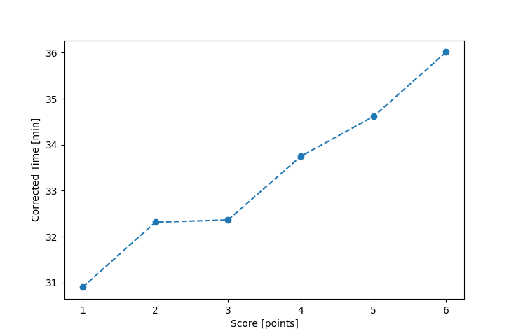

| Wind: | 2-3 (BFT) |
|---|---|
| RC: | Bill_P, David_Bu |
| Date: | May 23, 2021 |
| Notes: | M2 Starboard Rounding |
| Rank / Score | Name | Boat | Input Time [mm:ss] | Input Offset [mm:ss] | Race Time [mm:ss] | Race Time [s] | Handicap | Corrected Time [s] | Corrected Time [mm:ss] |
|---|---|---|---|---|---|---|---|---|---|
| 1.0 | Barry_O | HLR14 | 39:31 | 05:00 | 34:31 | 2071 | 1.11700 | 1854 | 30:54 |
| 2.0 | Mike_F | SF | 37:27 | 05:00 | 32:27 | 1947 | 1.00400 | 1939 | 32:19 |
| 3.0 | Nedra_F | SF | 37:30 | 05:00 | 32:30 | 1950 | 1.00400 | 1942 | 32:22 |
| 4.0 | Rod_H | LASEM | 37:50 | 05:00 | 32:50 | 1970 | 0.97300 | 2025 | 33:45 |
| 5.0 | Ian_O | SF | 39:45 | 05:00 | 34:45 | 2085 | 1.00400 | 2077 | 34:37 |
| 6.0 | Matt_L | DLPSR | 44:07 | 05:00 | 39:07 | 2347 | 1.08600 | 2161 | 36:01 |

Application Notes:
All race results are unofficial
View source code at https://github.com/cessnao3/portsmouthracecalc/